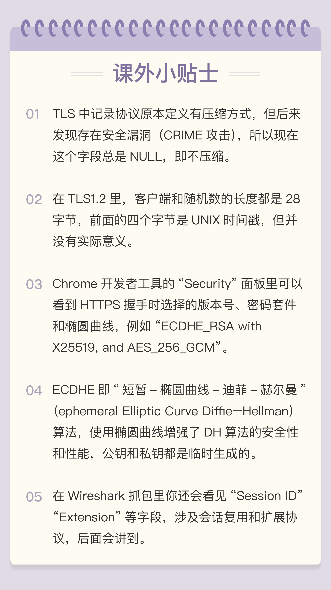

- 00 开篇词｜To Be a HTTP Hero.md.html
- 01 时势与英雄：HTTP的前世今生.md.html
- 02 HTTP是什么？HTTP又不是什么？.md.html
- 03 HTTP世界全览（上）：与HTTP相关的各种概念.md.html
- 04 HTTP世界全览（下）：与HTTP相关的各种协议.md.html
- 05 常说的“四层”和“七层”到底是什么？“五层”“六层”哪去了？.md.html
- 06 域名里有哪些门道？.md.html
- 07 自己动手，搭建HTTP实验环境.md.html
- 08 键入网址再按下回车，后面究竟发生了什么？.md.html
- 09 HTTP报文是什么样子的？.md.html
- 10 应该如何理解请求方法？.md.html
- 11 你能写出正确的网址吗？.md.html
- 12 响应状态码该怎么用？.md.html
- 13 HTTP有哪些特点？.md.html
- 14 HTTP有哪些优点？又有哪些缺点？.md.html
- 15 海纳百川：HTTP的实体数据.md.html
- 16 把大象装进冰箱：HTTP传输大文件的方法.md.html
- 17 排队也要讲效率：HTTP的连接管理.md.html
- 18 四通八达：HTTP的重定向和跳转.md.html
- 19 让我知道你是谁：HTTP的Cookie机制.md.html
- 20 生鲜速递：HTTP的缓存控制.md.html
- 21 良心中间商：HTTP的代理服务.md.html
- 22 冷链周转：HTTP的缓存代理.md.html
- 23 HTTPS是什么？SSLTLS又是什么？.md.html
- 24 固若金汤的根本（上）：对称加密与非对称加密.md.html
- 25 固若金汤的根本（下）：数字签名与证书.md.html
- 26 信任始于握手：TLS1.2连接过程解析.md.html
- 27 更好更快的握手：TLS1.3特性解析.md.html
- 28 连接太慢该怎么办：HTTPS的优化.md.html
- 29 我应该迁移到HTTPS吗？.md.html
- 30 时代之风（上）：HTTP2特性概览.md.html
- 31 时代之风（下）：HTTP2内核剖析.md.html
- 32 未来之路：HTTP3展望.md.html
- 33 我应该迁移到HTTP2吗？.md.html
- 34 Nginx：高性能的Web服务器.md.html
- 35 OpenResty：更灵活的Web服务器.md.html
- 36 WAF：保护我们的网络服务.md.html
- 37 CDN：加速我们的网络服务.md.html
- 38 WebSocket：沙盒里的TCP.md.html
- 39 HTTP性能优化面面观（上）.md.html
- 40 HTTP性能优化面面观（下）.md.html
- 结束语 做兴趣使然的Hero.md.html
- 捐赠
26 信任始于握手：TLS1.2连接过程解析
经过前几讲的介绍，你应该已经熟悉了对称加密与非对称加密、数字签名与证书等密码学知识。
有了这些知识“打底”，现在我们就可以正式开始研究 HTTPS 和 TLS 协议了。
HTTPS 建立连接
当你在浏览器地址栏里键入“https”开头的 URI，再按下回车，会发生什么呢？
回忆一下[第 8 讲]的内容，你应该知道，浏览器首先要从 URI 里提取出协议名和域名。因为协议名是“https”，所以浏览器就知道了端口号是默认的 443，它再用 DNS 解析域名，得到目标的 IP 地址，然后就可以使用三次握手与网站建立 TCP 连接了。
在 HTTP 协议里，建立连接后，浏览器会立即发送请求报文。但现在是 HTTPS 协议，它需要再用另外一个“握手”过程，在 TCP 上建立安全连接，之后才是收发 HTTP 报文。
这个“握手”过程与 TCP 有些类似，是 HTTPS 和 TLS 协议里最重要、最核心的部分，懂了它，你就可以自豪地说自己“掌握了 HTTPS”。
TLS 协议的组成
在讲 TLS 握手之前，我先简单介绍一下 TLS 协议的组成。
TLS 包含几个子协议，你也可以理解为它是由几个不同职责的模块组成，比较常用的有记录协议、警报协议、握手协议、变更密码规范协议等。
记录协议（Record Protocol）规定了 TLS 收发数据的基本单位：记录（record）。它有点像是 TCP 里的 segment，所有的其他子协议都需要通过记录协议发出。但多个记录数据可以在一个 TCP 包里一次性发出，也并不需要像 TCP 那样返回 ACK。
警报协议（Alert Protocol）的职责是向对方发出警报信息，有点像是 HTTP 协议里的状态码。比如，protocol_version 就是不支持旧版本，bad_certificate 就是证书有问题，收到警报后另一方可以选择继续，也可以立即终止连接。
握手协议（Handshake Protocol）是 TLS 里最复杂的子协议，要比 TCP 的 SYN/ACK 复杂的多，浏览器和服务器会在握手过程中协商 TLS 版本号、随机数、密码套件等信息，然后交换证书和密钥参数，最终双方协商得到会话密钥，用于后续的混合加密系统。
最后一个是变更密码规范协议（Change Cipher Spec Protocol），它非常简单，就是一个“通知”，告诉对方，后续的数据都将使用加密保护。那么反过来，在它之前，数据都是明文的。
下面的这张图简要地描述了 TLS 的握手过程，其中每一个“框”都是一个记录，多个记录组合成一个 TCP 包发送。所以，最多经过两次消息往返（4 个消息）就可以完成握手，然后就可以在安全的通信环境里发送 HTTP 报文，实现 HTTPS 协议。

抓包的准备工作
这次我们在实验环境里测试 TLS 握手的 URI 是“/26-1”，看了上面的图你就可以知道，TLS 握手的前几个消息都是明文的，能够在 Wireshark 里直接看。但只要出现了“Change Cipher Spec”，后面的数据就都是密文了，看到的也就会是乱码，不知道究竟是什么东西。
为了更好地分析 TLS 握手过程，你可以再对系统和 Wireshark 做一下设置，让浏览器导出握手过程中的秘密信息，这样 Wireshark 就可以把密文解密，还原出明文。
首先，你需要在 Windows 的设置里新增一个系统变量“SSLKEYLOGFILE”，设置浏览器日志文件的路径，比如“D:\http_study\www\temp\sslkey.log”（具体的设置过程就不详细说了，可以在设置里搜索“系统变量”）。
然后在 Wireshark 里设置“Protocols-TLS”（较早版本的 Wireshark 里是“SSL”），在“(Pre)-Master-Secret log filename”里填上刚才的日志文件。

设置好之后，过滤器选择“tcp port 443”，就可以抓到实验环境里的所有 HTTPS 数据了。
如果你觉得麻烦也没关系，GitHub 上有抓好的包和相应的日志，用 Wireshark 直接打开就行。
ECDHE 握手过程
刚才你看到的是握手过程的简要图，我又画了一个详细图，对应 Wireshark 的抓包，下面我就用这个图来仔细剖析 TLS 的握手过程。

在 TCP 建立连接之后，浏览器会首先发一个“Client Hello”消息，也就是跟服务器“打招呼”。里面有客户端的版本号、支持的密码套件，还有一个随机数（Client Random），用于后续生成会话密钥。
Handshake Protocol: Client Hello
Version: TLS 1.2 (0x0303)
Random: 1cbf803321fd2623408dfe…
Cipher Suites (17 suites)
Cipher Suite: TLS_ECDHE_RSA_WITH_AES_128_GCM_SHA256 (0xc02f)
Cipher Suite: TLS_ECDHE_RSA_WITH_AES_256_GCM_SHA384 (0xc030)
这个的意思就是：“我这边有这些这些信息，你看看哪些是能用的，关键的随机数可得留着。”
作为“礼尚往来”，服务器收到“Client Hello”后，会返回一个“Server Hello”消息。把版本号对一下，也给出一个随机数（Server Random），然后从客户端的列表里选一个作为本次通信使用的密码套件，在这里它选择了“TLS_ECDHE_RSA_WITH_AES_256_GCM_SHA384”。
Handshake Protocol: Server Hello
Version: TLS 1.2 (0x0303)
Random: 0e6320f21bae50842e96…
Cipher Suite: TLS_ECDHE_RSA_WITH_AES_256_GCM_SHA384 (0xc030)
这个的意思就是：“版本号对上了，可以加密，你的密码套件挺多，我选一个最合适的吧，用椭圆曲线加 RSA、AES、SHA384。我也给你一个随机数，你也得留着。”
然后，服务器为了证明自己的身份，就把证书也发给了客户端（Server Certificate）。
接下来是一个关键的操作，因为服务器选择了 ECDHE 算法，所以它会在证书后发送“Server Key Exchange”消息，里面是椭圆曲线的公钥（Server Params），用来实现密钥交换算法，再加上自己的私钥签名认证。
Handshake Protocol: Server Key Exchange
EC Diffie-Hellman Server Params
Curve Type: named_curve (0x03)
Named Curve: x25519 (0x001d)
Pubkey: 3b39deaf00217894e...
Signature Algorithm: rsa_pkcs1_sha512 (0x0601)
Signature: 37141adac38ea4...
这相当于说：“刚才我选的密码套件有点复杂，所以再给你个算法的参数，和刚才的随机数一样有用，别丢了。为了防止别人冒充，我又盖了个章。”
之后是“Server Hello Done”消息，服务器说：“我的信息就是这些，打招呼完毕。”
这样第一个消息往返就结束了（两个 TCP 包），结果是客户端和服务器通过明文共享了三个信息：Client Random、Server Random 和 Server Params。
客户端这时也拿到了服务器的证书，那这个证书是不是真实有效的呢？
这就要用到第 25 讲里的知识了，开始走证书链逐级验证，确认证书的真实性，再用证书公钥验证签名，就确认了服务器的身份：“刚才跟我打招呼的不是骗子，可以接着往下走。”
然后，客户端按照密码套件的要求，也生成一个椭圆曲线的公钥（Client Params），用“Client Key Exchange”消息发给服务器。
Handshake Protocol: Client Key Exchange
EC Diffie-Hellman Client Params
Pubkey: 8c674d0e08dc27b5eaa…
现在客户端和服务器手里都拿到了密钥交换算法的两个参数（Client Params、Server Params），就用 ECDHE 算法一阵算，算出了一个新的东西，叫“Pre-Master”，其实也是一个随机数。
至于具体的计算原理和过程，因为太复杂就不细说了，但算法可以保证即使黑客截获了之前的参数，也是绝对算不出这个随机数的。
现在客户端和服务器手里有了三个随机数：Client Random、Server Random 和 Pre-Master。用这三个作为原始材料，就可以生成用于加密会 话的主密钥，叫“Master Secret”。而黑客因为拿不到“Pre-Master”，所以也就得不到主密钥。
为什么非得这么麻烦，非要三个随机数呢？
这就必须说 TLS 的设计者考虑得非常周到了，他们不信任客户端或服务器伪随机数的可靠性，为了保证真正的“完全随机”“不可预测”，把三个不可靠的随机数混合起来，那么“随机”的程度就非常高了，足够让黑客难以猜测。
你一定很想知道“Master Secret”究竟是怎么算出来的吧，贴一下 RFC 里的公式：
master_secret = PRF(pre_master_secret, "master secret",
ClientHello.random + ServerHello.random)
这里的“PRF”就是伪随机数函数，它基于密码套件里的最后一个参数，比如这次的 SHA384，通过摘要算法来再一次强化“Master Secret”的随机性。
主密钥有 48 字节，但它也不是最终用于通信的会话密钥，还会再用 PRF 扩展出更多的密钥，比如客户端发送用的会话密钥（client_write_key）、服务器发送用的会话密钥（server_write_key）等等，避免只用一个密钥带来的安全隐患。
有了主密钥和派生的会话密钥，握手就快结束了。客户端发一个“Change Cipher Spec”，然后再发一个“Finished”消息，把之前所有发送的数据做个摘要，再加密一下，让服务器做个验证。
意思就是告诉服务器：“后面都改用对称算法加密通信了啊，用的就是打招呼时说的 AES，加密对不对还得你测一下。”
服务器也是同样的操作，发“Change Cipher Spec”和“Finished”消息，双方都验证加密解密 OK，握手正式结束，后面就收发被加密的 HTTP 请求和响应了。
RSA 握手过程
整个握手过程可真是够复杂的，但你可能会问了，好像这个过程和其他地方看到的不一样呢？
刚才说的其实是如今主流的 TLS 握手过程，这与传统的握手有两点不同。
第一个，使用 ECDHE 实现密钥交换，而不是 RSA，所以会在服务器端发出“Server Key Exchange”消息。
第二个，因为使用了 ECDHE，客户端可以不用等到服务器发回“Finished”确认握手完毕，立即就发出 HTTP 报文，省去了一个消息往返的时间浪费。这个叫“TLS False Start”，意思就是“抢跑”，和“TCP Fast Open”有点像，都是不等连接完全建立就提前发应用数据，提高传输的效率。
实验环境在 440 端口（https://www.chrono.com:440⁄26-1）实现了传统的 RSA 密钥交换，没有“False Start”，你可以课后自己抓包看一下，这里我也画了个图。

大体的流程没有变，只是“Pre-Master”不再需要用算法生成，而是客户端直接生成随机数，然后用服务器的公钥加密，通过“Client Key Exchange”消息发给服务器。服务器再用私钥解密，这样双方也实现了共享三个随机数，就可以生成主密钥。
双向认证
到这里 TLS 握手就基本讲完了。
不过上面说的是“单向认证”握手过程，只认证了服务器的身份，而没有认证客户端的身份。这是因为通常单向认证通过后已经建立了安全通信，用账号、密码等简单的手段就能够确认用户的真实身份。
但为了防止账号、密码被盗，有的时候（比如网上银行）还会使用 U 盾给用户颁发客户端证书，实现“双向认证”，这样会更加安全。
双向认证的流程也没有太多变化，只是在“Server Hello Done”之后，“Client Key Exchange”之前，客户端要发送“Client Certificate”消息，服务器收到后也把证书链走一遍，验证客户端的身份。
小结
今天我们学习了 HTTPS/TLS 的握手，内容比较多、比较难，不过记住下面四点就可以。
- HTTPS 协议会先与服务器执行 TCP 握手，然后执行 TLS 握手，才能建立安全连接；
- 握手的目标是安全地交换对称密钥，需要三个随机数，第三个随机数“Pre-Master”必须加密传输，绝对不能让黑客破解；
- “Hello”消息交换随机数，“Key Exchange”消息交换“Pre-Master”；
- “Change Cipher Spec”之前传输的都是明文，之后都是对称密钥加密的密文。
课下作业
- 密码套件里的那些算法分别在握手过程中起了什么作用？
- 你能完整地描述一下 RSA 的握手过程吗？
- 你能画出双向认证的流程图吗？
欢迎你把自己的学习体会写在留言区，与我和其他同学一起讨论。如果你觉得有所收获，也欢迎把文章分享给你的朋友。

© 2019 - 2023 Liangliang Lee. Powered by gin and hexo-theme-book.